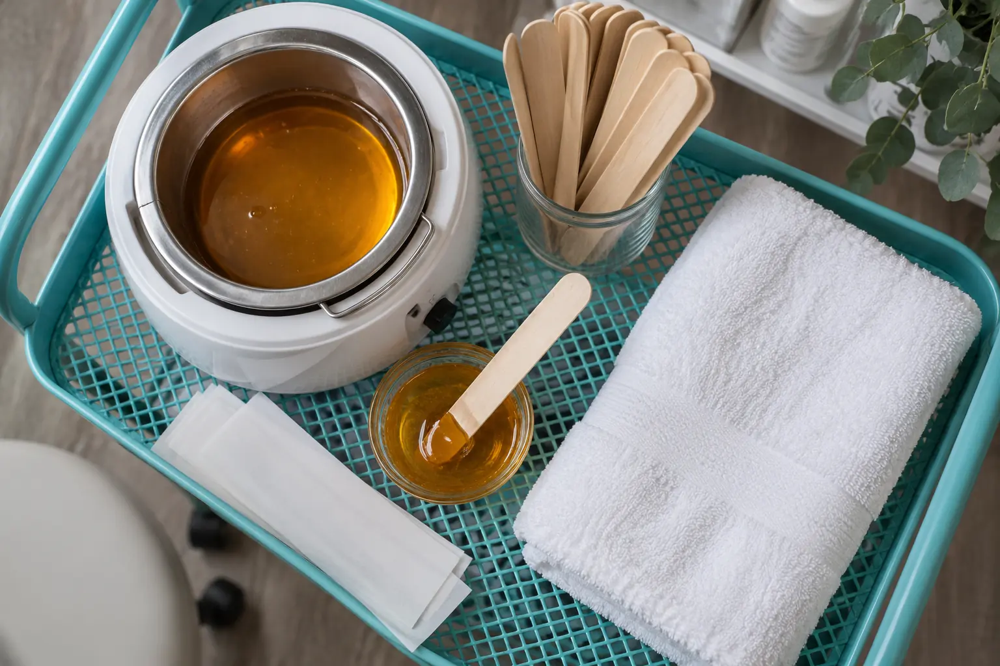

Depiliacijos gidas: vaškas, cukraus pasta, zonos ir vizito eiga
Autorius: Madbeauty redakcija · Numatyta 2026 m. lapkričio 1 d. 10:00 (Lietuvos laiku)
Likusi patikra prieš publikavimą
- Plane aiškiai numatyta patikra dar neatlikta: „Depiliacijos specialisto eigos review“. Reikia tikros nurodytos srities peržiūros; bendrų šaltinių skaitymas ir agento redakcinė peržiūra jos nepakeičia.
Vaško ir cukraus pastos pavadinimai nepasako visos vizito apimties. Sužinokite, kaip palyginti metodą, zoną, paslaugos ribas ir teikėjo nurodomą eigą.

Rinkdamiesi depiliaciją pirmiausia įvardykite norimą metodą ir kūno zoną, tada patikrinkite, kas tiksliai įeina į vizitą. Vaškas plaukelį pašalina nuo šaknies, o skustuvas jį patrumpina ties odos paviršiumi. Šis skirtumas padeda suprasti metodą, bet nenusako vienodos atauginimo trukmės ar kiekvienam tinkamo pasirinkimo. Cukraus pastos paslaugos pavadinimas taip pat savaime nepaaiškina konkrečios eigos ar paketo sudėties.
Plaukelio pašalinimo principas
Amerikos dermatologų akademijos informacijoje vaškavimas ir skutimas aprašomi kaip skirtingi plaukelių šalinimo būdai: vaškas pašalina plaukelį nuo šaknies, o skustuvas kerpa ties paviršiumi. Tai nėra pagrindas pažadėti konkretų rezultatą ar neskausmingą procedūrą. Jei lyginate vašką su cukraus pasta, patikrinkite teikėjo aprašytą metodą ir priemones, užuot sprendę vien iš paslaugos pavadinimo. Daugiau apie šiuos skirtumus rašo Amerikos dermatologų akademija.
Metodas ir zona
Kainyne atskirai ieškokite metodo ir zonos. „Kojos“ gali reikšti blauzdas, šlaunis arba visą plotą; bikini paslaugos pavadinimai gali žymėti skirtingas ribas. Jei aprašyme zona neapibrėžta, prieš užsakydami paprašykite ją įvardyti paprastais žodžiais. Tą patį darykite derindami kelias zonas: nepriimkite, kad jų apimtis, trukmė ar kaina automatiškai įskaičiuota į vieną bendrą pasiūlymą. Vieno Kauno teikėjo meniu, peržiūrėtame 2026-10-09, vaško depiliacijai nurodė blauzdas už 25 Eur ir 45 min., o visas kojas – už 40 Eur ir 60 min.; bikini buvo pateiktas kaip atskira zona. Tai tik konkretaus meniu pavyzdys, ne rinkos vidurkis ar Madbeauty pasiūlymas. Kainas ir sąlygas tikrinkite pačiame teikėjo meniu.
- Metodas: vaškas ar cukraus pasta? Koks tikslus paslaugos aprašymas ir naudojama priemonė?
- Zona: kuri kūno dalis įtraukiama ir kur baigiasi jos ribos?
- Apimtis: ar pasiūlymas apima vieną zoną, kelias zonas, ar yra atskirų darbų?
- Sąlygos: kokia konkreti kaina ir numatoma trukmė, ką reikia žinoti prieš vizitą ir kokia priežiūra rekomenduojama po jo?
- Komfortas: kaip vizito metu pasakyti, kad norite sustoti ar aptarti eigą?
Vizito eiga bei komfortas
Prieš registruodamiesi sulyginkite pasirinktos zonos pavadinimą su jos ribomis, patikrinkite įtrauktus darbus ir paprašykite paaiškinti neaiškias sąlygas. Vizito pradžioje dar kartą patvirtinkite, kokia zona ir paslauga aptarta. Jei kyla diskomfortas, pasakykite apie jį teikėjui; neskausmingo rezultato garantuoti negalima. Po vizito laikykitės būtent to teikėjo nurodymų, nes vien bendras paslaugos pavadinimas neatskleidžia naudotų priemonių ar konkretaus protokolo.
Higiena taip pat yra pasirinkimo dalis. AAD nurodo, kad vaško šiluma nėra dezinfekcija ir į vašką merkiamo aplikatoriaus nereikėtų pakartotinai naudoti po kontakto su oda. Jei neaišku, kaip teikėjas laikosi higienos, prieš procedūrą paprašykite paaiškinti jo darbo tvarką.
Plaukų šalinimo konsultacija: metodo paskirtis ir konkreti paslaugos apimtis
„Plaukų šalinimo konsultacija“ gali reikšti pokalbį apie metodų pasirinkimą, tačiau vien pavadinimas nepatvirtina, kad įtrauktas pats plaukelių šalinimas. Prieš užsakydami išsiaiškinkite, ar tai atskiras aptarimas, ar procedūra; kokia zona bus vertinama; kokios priemonės ar metodas numatyti; ar yra papildoma kaina ir kiek laiko skiriama. Pavyzdžiui, jei norite kelių kojų zonų, iš anksto nurodykite jas atskirai ir paprašykite patvirtinti, kas įtraukta į visą vizitą. Tai padeda palyginti tikrą paslaugos apimtį, o ne vien panašiai skambančius pavadinimus.
Šis gidas padeda suprasti pasirinkimus, bet pats nėra teikėjo pasiūlymas ar aktyvi registracija. Prieš priimdami sprendimą remkitės konkrečiu, aktualiu paslaugos aprašymu.
Palyginkite procedūrų aprašus kataloge: Vašku ir Cukrumi. Konkrečią darbų apimtį, kainą ir prieinamumą tikrinkite prie realaus teikėjo pasiūlymo.
Planuojamos vidinės nuorodos
Šaltiniai peržiūrai
- AAD · plaukelių šalinimo metodai — AAD: vaškas šalina plaukelį nuo šaknies, skutimas trumpina ties paviršiumi; vaško karštis nėra dezinfekcija, pakartotinai nenaudoti į vašką merkiamo aplikatoriaus. Nėra neskausmingumo pažado. Nekurti individualių vaistų nutraukimo ar kontraindikacijų grafiko. Zonos ir ribos susitariamos su teikėju.
- Depiliacija · Kauno meniu — 2026-10-09 meniu skiria vašką ir cukrų, blauzdas/šlaunis/visas kojas bei klasikinio bikini ribą. Blauzdų depiliacija vašku 45 min/25 EUR, visų kojų 60 min/40 EUR. Akivaizdžiai nepatikimą rankų cukrumi 2 EUR įrašą atmesti ir neplatinti. Ne rinkos vidurkis, ne Madbeauty pasiūlymas.